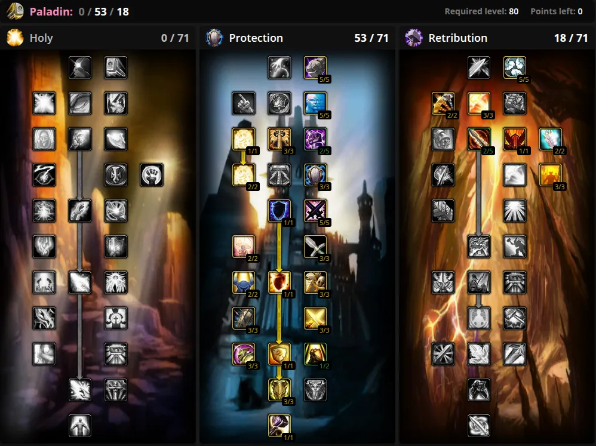
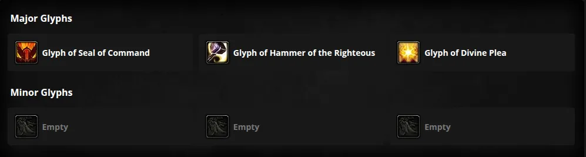
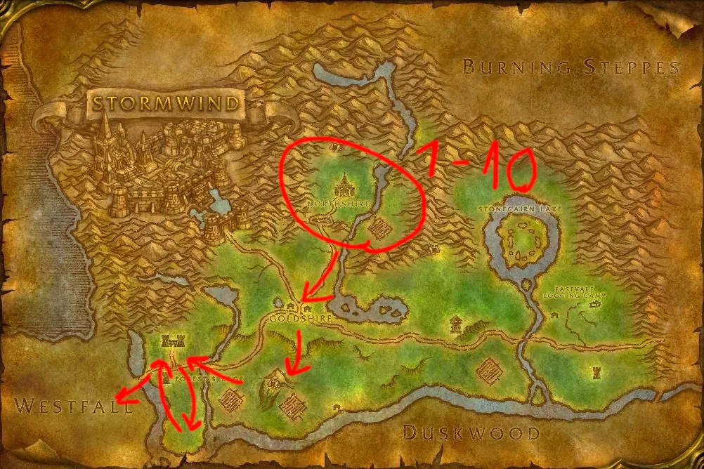
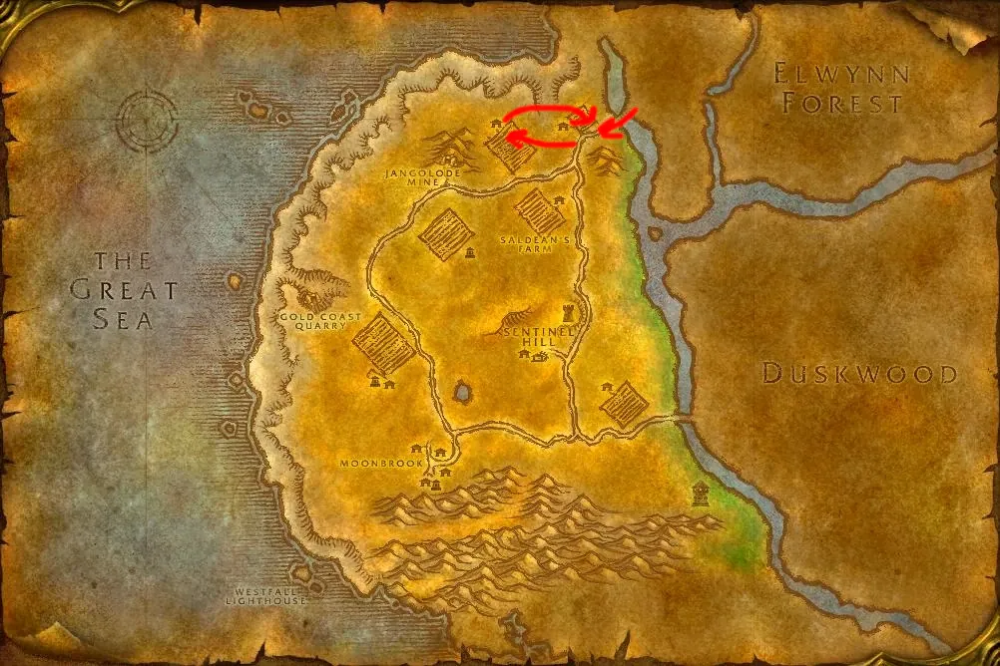
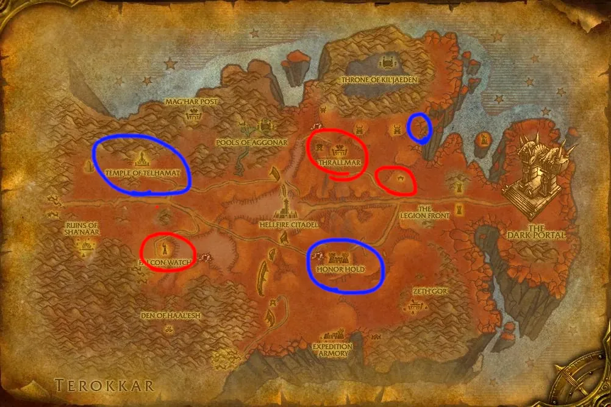
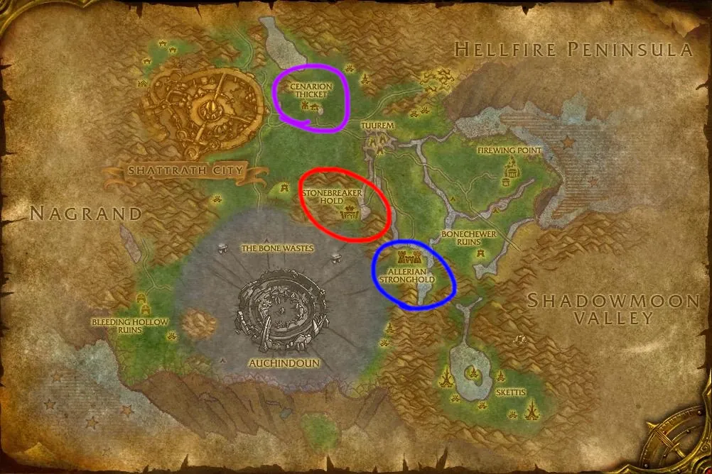

WotLK Warmane Icecrown - Paladin Leveling 1 to 80
Race, talents, glyphs, skills and a leveling plan for Paladins.
Introduction
Why Paladin
-
Cheaper ground mount at level 20 and 40
-
Versatile role
-
Strong tank and healing
Race
-
Human
-
Draenei
-
Blood Elf
Talents

Glyphs
https://www.wowhead.com/wotlk/talent-calc/paladin/-05005132203152321333311301-052300212003_001nmd11xqk21xqq

Paladin skills recommendation
Due to our limited resource in gold, some skills will not be learned during the leveling.
Don’t learn these skills if you’re playing tank specialization.
Holy specialization:
-
Holy Light
-
Redemption (learn only level 1)
-
Seal of Righteousness
-
Exorcism
-
Sense Undead
-
Concentration Aura
-
Turn Evil
-
Seal of Light
-
Holy Wrath
Retribution specialization:
-
Judgement of Light
-
Judgement of Justice
-
Hammer of Wrath
-
Seal of Vengeance/Corruption
-
Avenging Wrath
Protection specialization:
-
Seal of Justice
-
Hand of Salvation
-
Divine Intervention
-
Shadow, Frost and Fire Aura
-
Hand of Sacrifice
Visit your class trainer at these level:
-
16
-
20
-
24*
-
26*
-
30
-
34*
-
36*
-
40
-
42*
-
44*
-
46*
-
50
-
52*
-
54*
-
56*
-
58*
-
60
-
62 (Crusader Aura)
-
65*
-
66*
-
70
-
71
-
73*
-
74*
-
75
-
76*
-
77*
-
79*
-
80
* = Can be skipped
Leveling
General tips
-
Try to logout inside Capitals to gain rested XP
-
Check “Paladin skills recommendation” section to optimise your time and gold with your class trainer
-
Keep space in your inventory before each dungeon run
-
At level 20 you can learn your 60% speed ground mount and at level 40 your 100% speed ground mount
-
Paladins don’t learn their “Resurrection spell” through their class trainer, It’s learned from a quest
1 - 15

We start in Northshire.
-
Complete quest until reaching level 6
-
Learn all skills from the trainer
-
Take a 1 handed weapon from the quest reward
-
Complete all quest getting us to level 10 or close
Then we go to Goldshire and take all the quests.
-
Take all the quests
-
Set Hearthstone in Goldshire
-
Head to the mine in south of Goldshire
-
Complete the 3 quests in the mine
-
Head to “Forest’s edge” in the west
-
Return and take the quest in front of the castle
-
Head to the south to defeat Hoggler while killing the gnolls in the way
-
Once completed, return the headband quest and head to Westfall

Once crossing the bridge, you will find 2 NPC, get the quests.
-
Collect 3 okras in the field next to them
-
Head to the second field and collect the item
-
Collect 4 more okras there
-
Return the quests in the first field
Here, you should be level 14.
-
Use Hearthstone to return to Goldshire
-
Return all the quest you have in Goldshire
-
Learn skill from class trainer
15 - 58
-
Queue in RDF
-
Head to Stormwind while waiting
-
Set Hearthstone in Stormwind
-
Once level 20 learn “Summon Warhorse” (60% speed ground mount) and take your class trainer quests to learn “Redemption”
-
Complete it
-
Buy from the Auction House “Glyph of Seal of Command” and equip it
-
Go to Ironforge and learn axe wielding
Now the goal is to level while earning gold:
-
Do RDF -> Learn skills
-
When RDF is long -> Do professions
-
When inventory is full -> sell your stuff in the Auction House
-
At level 40 you should be able to learn “Summon Charger” (100% speed ground mount)
58 - 68
Head through the Dark Portal to the Outlands:
-
Take the introduction quest before the Dark Portal
-
Complete quests in Hellfire Peninsula until reaching level 66 or 67 (red marker for Horde and blue for Alliance quests)

-
Head to Terokkar Forest and complete quests until reaching 68

Dungeons are not recommended for their low XP reward. Although I recommend you complete “Hellfire Ramparts” after you get the dungeon quest.
68 - 80
-
Take the boat in Stormwind and head to Borean Tundra in the Northrend
-
Complete quests until reaching level 72
-
Head to Dragonblight and complete quests until reaching level 74
-
Head to Zul'Drak and complete quests until reaching level 77
-
Get your free flying mount in The Storm Peaks
-
Complete the Argent Vanguard quest line in Icecrown
-
Complete the The Shadow Vault quest line in Icecrown
Congratulations! Now you should be level 80.
Make sure to check my Warmane Level 80 Gearing Guide.